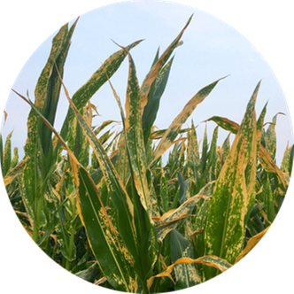

6. Control de plagas y enfermedades.
Las zonas de cultivo que se requiera serán tratadas con el control de plaguicida Amina y fungicidas Acloro cada 30 días.
7.1. Etapas de desarrollo del maíz y ataque de plagas.
7.1.1. En la siembra y hasta poco después de la germinación
Estos dos métodos se aplican en áreas con amplios recursos hídricos y de manera restrictiva solo en campos con una pendiente inferior al 0,5 %. En caso de que exista un gran peligro de degradación y erosión del suelo, se deben evitar ambos métodos.
7.1.2. Cuando la planta de maíz tiene ya más de 8 hojas
Pueden empezar los ataques de los gusanos trazadores (como las larvas de primera generación de Sesamia nonagrioides), el gusano cogollero, la rosquilla verde, la rosquilla negra (gardama), el gusano soldado, la oruga militar, orugas filófagas, etc. También el maíz puede ser invadido por pulgones y por cicadéllidos. También ácaros, larvas de diabrótica, etc.
7.1.3. Cuando la planta de maíz tiene ya más de 12 hojas y el tallo muestra un crecimiento rápido
Estos dos métodos se aplican en áreas con amplios recursos hídricos y de manera restrictiva solo en campos con una pendiente inferior al 0,5 %. En caso de que exista un gran peligro de degradación y erosión del suelo, se deben evitar ambos métodos.
7.2. Tipos de Plagas y enfermedades.
7.2.1. Plagas más comunes.

a. Gusano cogollero:
El gusano cogollero (Helicoverpa armigera o Helicoverpa zea) es un insecto importante y común amenazante para el maíz, que puede ocasionar graves daños al maíz dulce. La larva puede dañar (debido a su alimentación) las hojas, borlas y especialmente las barbas y mazorcas, que son las partes de las que el insecto prefiere alimentarse.
b. Barrenador de tallo del maíz:
Los gusanos (larvas) tienen un color entre amarillo y marrón y una cabeza marrón y se alimentan de plantas jóvenes y pudren el cogollo y dañan las hojas. A medida que la larva madura, entra en los tallos. Debilitan y agujerean los tallos y atrofian las plantas (debido a la alteración del flujo de nutrientes y agua de la planta).

c. Gusanos cortadores:
Las larvas se alimentan de los tallos y las hojas y pueden cortar las plantas jóvenes por la base.
d. Áfidos pulgones de maíz y trips del maíz
Ambos insectos pueden disminuir la productividad de las plantas de maíz y causar daños graves, especialmente en plantas con estrés hídrico y en condiciones ambientales favorables. En infecciones graves, las plantas se vuelven cloróticas (manchas amarillentas en las hojas)

e. Gusanos blancos, tijeretas negras de campo y langostas migratorias
Cada uno de ellos pueden ocasionar problemas y pérdidas graves en el maíz (durante las fases de crecimiento de la planta).
7.2.2. Enfermedades fungicidas más comunes.
a. Mancha foliar gris:
La mancha foliar gris
(patógeno: Cercospora zeae-maydis) se
considera la principal amenaza para los
cultivos de maíz en la mayor parte del
mundo, causando incluso hasta un 100 %
de pérdidas de producción de granos.

b. Tizón de la hoja de maíz del norte y del sur
Son distintas enfermedades causadas
por diferentes hongos que tienen en común los síntomas de lesiones alargadas
de color verde grisáceo a marrón que
aparecen en las hojas y las importantes
pérdidas de producción que estos patógenos están causando en los campos
de maíz hoy en día.
c. Carbón de la espiga
Infecta las plántulas de maíz jóvenes durante y después de que broten de la tierra,
se propaga y crece sistémicamente dentro
de la planta sin mostrar ningún síntoma en
las fases tempranas.

d. La roya común y el mildiú velloso
Se propagan con bastante facilidad dentro
del cultivo, pero se pueden transferir fácilmente desde y hacia los maizales vecinos, alcanzando la gravedad de una epidemia.
e. Putrefacción de la raíz (Pythium y Rhizoctonia)
Ambos hongos infectan el sistema radicular
de las plantas de maíz en cualquier etapa de
desarrollo, lo que provoca la pudrición. Las
plantas infectadas pueden tener un crecimiento limitado (plantas enanas), ser poco
robustas, desarrollar clorosis, tener raíces
descoloridas y encamarse o morirse.

a. Mancha foliar gris:
La mancha foliar gris (patógeno: Cercospora zeae-maydis) se considera la principal amenaza para los cultivos de maíz en la mayor parte del mundo, causando incluso hasta un 100 % de pérdidas de producción de granos.
b. Tizón de la hoja de maíz del norte y del sur
Son distintas enfermedades causadas por diferentes hongos que tienen en común los síntomas de lesiones alargadas de color verde grisáceo a marrón que aparecen en las hojas y las importantes pérdidas de producción que estos patógenos están causando en los campos de maíz hoy en día.
c. Carbón de la espiga
Infecta las plántulas de maíz jóvenes durante y después de que broten de la tierra, se propaga y crece sistémicamente dentro de la planta sin mostrar ningún síntoma en las fases tempranas.
d. La roya común y el mildiú velloso
Se propagan con bastante facilidad dentro del cultivo, pero se pueden transferir fácilmente desde y hacia los maizales vecinos, alcanzando la gravedad de una epidemia.
e. Putrefacción de la raíz (Pythium y Rhizoctonia)
Ambos hongos infectan el sistema radicular de las plantas de maíz en cualquier etapa de desarrollo, lo que provoca la pudrición. Las plantas infectadas pueden tener un crecimiento limitado (plantas enanas), ser poco robustas, desarrollar clorosis, tener raíces descoloridas y encamarse o morirse.
7.2.3. Enfermedades víricas más comunes
Necrosis letal:
Ocurre en todas las etapas de crecimiento de las plantas y puede causar un crecimiento limitado de las plantas, clorosis de las hojas (desde la base de la hoja) que pudre el cogollo en las plantas más jóvenes, mazorcas malformadas, poco formadas o no formadas, inflorescencias masculinas pobres o incluso la muerte de las plantas. Los virus pueden ser transmitidos por las semillas de plantas infectadas y vectores como trips de maíz, áfidos y diabróticas.